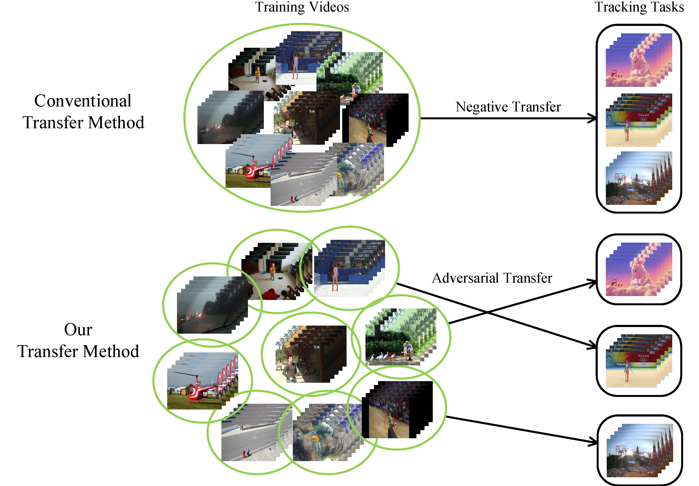

|
Lijie Liu's Homepage Master Candidate Intelligent Vision Group (IVG) Department of Automation Tsinghua University Beijing 100084, China Office: Room 624, Main Building Email: liulj17 At mails dot tsinghua dot edu dot cn |
Biography
I am a third-year Master Candidate (2017-) at the Department of Automation of Tsinghua University supervised by Professor Jiwen Lu. My Bachelor's degree is received from the Department of Automation at Tsinghua University.See here for my resume.
Research Interests
- Computer Vision
- 2D Object Tracking: Working on Correlation Filter-based and MDNet-based Tracker
- 2D & 3D Object Detection: Working on Monocular Camera-based, Stereo Camera-based, and LiDAR-based Detectors
- Scene Understanding: Monocular Depth Estimation, Image-based and LiDAR-based Semantic Segmentation
- Machine Learning for Vision
- Adversarial Learning: GAN
- Reinforcement Learning: Policy Gradient, Deep Q Networks, Actor-Critic
News
Mar. 2019 -- One paper accepted to CVPR 2019 as Poster!Jun. 2018 -- One paper accepted to IROS 2018 as Oral!
Oct. 2016 -- Joined Professor Jiwen Lu's group.
Publications
|
Deep Fitting Degree Scoring Network for Monocular 3D Object Detection [PDF][Project] Lijie Liu, Jiwen Lu, Chunjing Xu, Qi Tian, Jie Zhou IEEE Conference on Computer Vision and Pattern Recognition (CVPR), 2019 |
|
|  |
Adversarial Transfer Networks for Visual Tracking [PDF][Project] Lijie Liu, Jiwen Lu, Jie Zhou IEEE/RSJ International Conference on Intelligent Robots and Systems (IROS), 2018 |
Teaching
Professional Service
- Reviewer: ICIP2018,2019, ICME2019W, CASE2018,2019, ICPR2018. Recieved Accuracy scores of 3 (highest) and Justification scores of 3 (highest) for all the 4 papers reviewed in ICIP2018.
Awards and Honors
- Best Oral Report, 2018 Asian Universities Alliance Postgraduate Academic Forum.
- Excellent Graduated Thesis, 2017.
- HAGE Scholarship, Department of Automation, Tsinghua University, 2015,2016.
- Tsinghua University Academic Excellence Award, 2014.
- Hengda Scholarship, Tsinghua University, 2014.
- Third Prize, National Physics Contest of College Students, 2014.
Talks
- Adversarial Transfer Networks for Visual Tracking [slides] (3 minutes) In IEEE/RSJ International Conference on Intelligent Robots and Systems (IROS), 10/2/2018
- Adversarial Transfer Networks for Visual Tracking [slides] (20 minutes) In 2018 Asian Universities Alliance Postgraduate Academic Forum, 10/21/2018
- Deep Fitting Degree Scoring Network for Monocular 3D Object Detection [slides] (20 minutes) In 2019 Beijing Universities Academic Forum of Artificial Intelligence, 3/30/2019